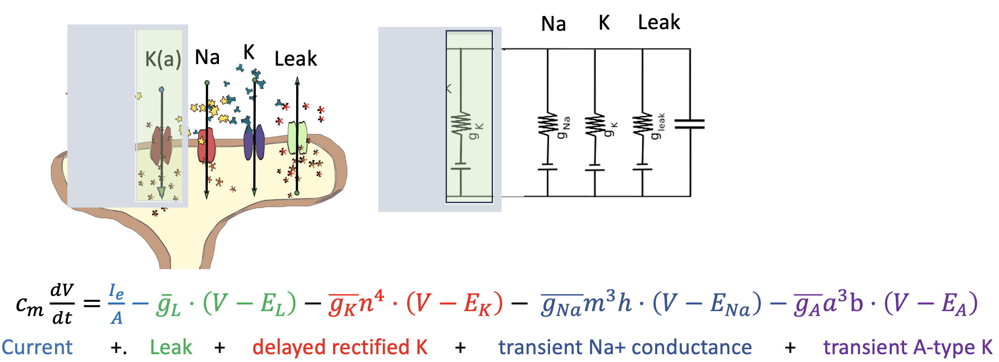
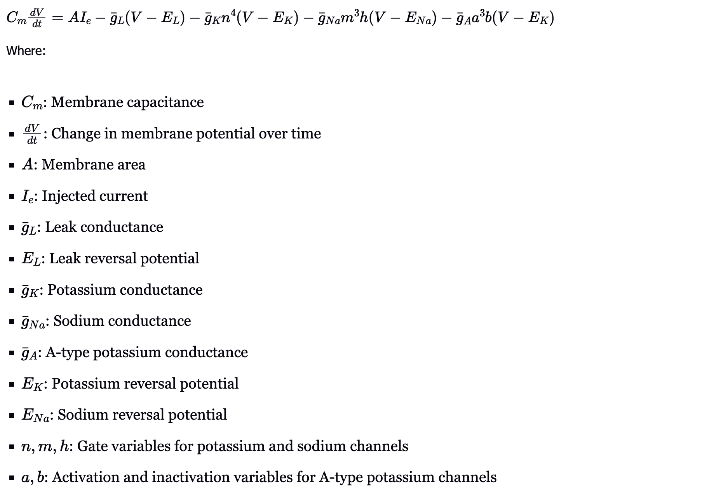

Like Hodgkin-Huxley, this model describes membrane potential using nonlinear differential equations based on ion channel dynamics. Its key addition is the \( I_A \) current, which activates and inactivates rapidly.

Components of the Model
The Connor-Stevens model includes the core components of Hodgkin-Huxley, with the addition of the transient A-type potassium current:
1. Current Injection I_e
External current input used to simulate stimuli, just as in the HH model.
2. Leak Conductance g_L
Passive ion flow across the membrane through leak channels, contributing to the resting membrane potential.
3. Delayed Rectifier Potassium Current g_K
Helps return the membrane to rest after depolarization. This current increases as n activates during a spike.
4. Transient Sodium Current g_Na
Initiates the rapid upstroke of the action potential through voltage-gated sodium channels. Modeled using gate variables \( m \) and \( h \).
5. A-type Potassium Current g_A
Unique to the Connor-Stevens model. The I_A current activates quickly and inactivates shortly after, contributing to delayed firing and spike frequency modulation.
This A-type current allows neurons to have richer dynamics than those captured by the Hodgkin-Huxley model alone.